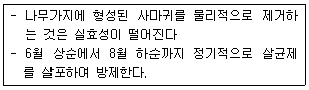
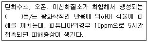
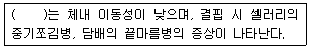

식물보호기사 (2017-05-07 기출문제)
1과목: 식물병리학
1. 보르도액에서 살균효과가 있는 유효성분은?
- 구리
- 철분
- 아연
- 칼슘
(정답률: 91%)

2. 하우스에 재배하는 채소에서 과습과 저온에서 많이 발생하는 병은?
- 고추 탄저병
- 오이 덩굴쪼김병
- 토마토 풋마름병
- 딸기 잿빛곰팡이병
(정답률: 75%)
3. 바이로이드에 의한 식물병은?
- 벼 오갈병
- 감자 걀쭉병
- 담배 모자이크병
- 모과나무 검은별무늬병
(정답률: 79%)
4. 석회를 이용한 토양산도 조절로 pH를 7.0이상으로조절하여 방제하는 병은?
- 밀 마름병
- 감자 더뎅이병
- 배추 무사마귀병
- 목화 뿌리썩음병
(정답률: 72%)
5. 마름무늬매미충에 의해 전반되지 않는 병은?
- 뽕나무 오갈병
- 벚나무 빗자루병
- 붉나무 빗자루병
- 대추나무 빗자루병
(정답률: 72%)
6. 19세기 중반 아일랜드에 큰 기근으로 인하여 100만명을굶어 죽게 하였던 식물병은?
- 감자 역병
- 감자 바이러스병
- 사과나무 점무늬병
- 옥수수 깨시무늬병
(정답률: 90%)
7. 벼에 발생하는 병원균이 종자전염하는 것은?
- 오갈병
- 키다리병
- 잎집무늬마름병
- 줄무늬잎마름병
(정답률: 74%)
8. 파이토플라스마에 의해서 발생하는 병은?
- 벼 오갈병
- 감자 역병
- 오이 노균병
- 오동나무 빗자루병
(정답률: 82%)
9. 목재 백색썩음병에 관계하는 중요한 효소는?
- 탄닌 분해효소
- 리그닌 분해효소
- 셀룰로오스 분해효소
- 헤미셀룰로오스 분해효소
(정답률: 74%)
10. 벼 키다리병균의 불완전세대는?
- Fusarium roseum
- Fusarium lateritium
- Fusarium oxysporum
- Fusarium moniliforme
(정답률: 57%)
11. 다음 방제방법에 해당하는 사과의 병은?

- 탄저병
- 부란병
- 겹무늬썩음병
- 검은별무늬병
(정답률: 51%)
12. 감염된 식물체를 가축이 먹으면 해로운 병은?
- 벼 도열병
- 콩 자줏빛무늬병
- 배추 모자이크병
- 보리 붉은곰팡이병
(정답률: 90%)
13. 맥류 줄기녹병의 중간 기주는?
- 향나무
- 뽕나무
- 매자나무
- 아까시나무
(정답률: 85%)
14. 식물에 모자이크 증상을 일으키는 대표적인 병원체는?
- 세균
- 곰팡이
- 바이러스
- 파이토플라스마
(정답률: 86%)
15. 자낭포자로 인한 표징이 잘 나타나지 않는 병은?
- 밀 줄기녹병
- 벼 깨씨무늬병
- 벼 잎집얼룩병
- 보리 겉깜부기병
(정답률: 47%)
16. 벼 흰잎마름병 발생에 가장 중요한 요인은?
- 침수
- 한발
- 저온
- 비료부족
(정답률: 82%)
17. 복숭아 잎오갈병의 병원균은?
- 세균
- 선충
- 곰팡이
- 바이러스
(정답률: 52%)
18. 형광항체법을 이용하는 식물병 진단방법은?
- 혈청학적 진단
- 이화학적 진단
- 생물학적 진단
- 핵산분석에 의한 진단
(정답률: 82%)
19. 벼 줄무늬잎마름병을 방제하는 방법으로 가장 효과가 작은 것은?
- 살균제 살포
- 애멸구 제거
- 저항성 품종 재배
- 논두렁 잡초 제거
(정답률: 64%)
20. 잣나무 털녹병의 전염경로에 대한 설명으로 옳은 것은?
- 잣나무에서 겨울포자 → 솔이풀에서 겨울포자 → 송이풀에서 여름포자 → 잣나무에 침입
- 잣나무에서 담자포자 → 송이풀에서 여름포자 → 송이풀에서 겨울포자 → 잣나무에 침입
- 잣나무에서 녹포자 → 송이풀에서 여름포자 → 송이풀에서 녹포자 → 송이풀에서 겨울포자 → 잣나무에 침입
- 잣나무에서 녹포자 → 송이풀에서 여름포자 → 송이풀에서 겨울포자 → 송이풀에서 담자포자 → 잣나무에 침입
(정답률: 73%)
2과목: 농림해충학
21. 길앞잡이과가 해당하는 목은?
- 나비목
- 파리목
- 메뚜기목
- 딱정벌레목
(정답률: 68%)
22. 곤충의 일반적 특징으로 옳지 않은 것은?
- 온혈동물이다
- 부속지들이 마디로 되어 있다.
- 외골격이 발달하여 근육의 부착점이 된다.
- 탈피를 통해 성장하고 변태과정을 거치기도 한다.
(정답률: 83%)
23. 유충이 육식성으로 수서생활을 하고, 물 밖으로 나와 번데기가 되어 성충으로 몇 시간 또는 며칠만 사는 것은?
- 뱀잠자리
- 약대벌레
- 부채벌레
- 풀잠자리
(정답률: 56%)
24. 애멸구에 대한 설명으로 옳지 않은 것은?
- 약충기에만 벼 즙액을 빨아 먹는 다.
- 우리나라 남부지방에서 월동이 가능하다.
- 줄무늬잎마름병 같은 바이러스병을 매개한다.
- 이모작 맥류재배를 하면 많이 발생하기도 한다.
(정답률: 75%)
25. 식물의 선천적 내충성과 관계가 없는 것은?
- 내성
- 회귀성
- 항생성
- 비선호성
(정답률: 65%)
26. 조팝나무진딧물에 대한 설명으로 옳지 않은 것은?
- 조팝나무에서 성충으로 월동한다.
- 귤나무의 경우 새잎 뒷면에 기생한다.
- 한국, 일본, 북아메리카 등에서 발생한다.
- 주로 조팝나무, 사과나무, 귤나무에 서식한다.
(정답률: 75%)
27. 곤충의 말피기관에 대한 설명으로 옳은 것은?
- 바퀴 등 특수한 곤충에서만 볼 수 있는 감각기관이다.
- 대부분의 곤충에서 전장과 중장 사이에 위치하며 감각기관이다.
- 대부분의 곤충에서 중장과 후장사이에 위치하며 배설작용을 한다.
- 곤충의 전장과 중장 그리고 후장 사이마다 위치하며 배설작용을 한다.
(정답률: 82%)
28. 생물적 방제에 대한 설명으로 옳지 않은 것은?
- 효과 발현까지는 시간이 걸린다.
- 인축, 야생동물, 천적 등에 위험성이 적다.
- 생물상의 평형을 유지하여 해충밀도를 조절한다.
- 거의 모든 해충에 유효하며 특히 대발생을 속효적으로 억제하는데 더욱 효과가 크다.
(정답률: 85%)
29. 곤충의 외표피에 대한 설명으로 옳지 않은 것은?
- 수분의 증산을 억제하는 왁스층이 있다.
- 단백질과 지질로 구성된 매우 얇은 층이다.
- 큐티클 단면에서 몸의 가장 바깥쪽에 위치한다.
- 탈피시 내원표피를 소화시키는 탈피액도 분비한다.
(정답률: 63%)
30. 해충의 통계적 예찰법을 적용하려 할 때 주의사항으로 옳지 않은 것은?
- 변동량이 극단적인 경우는 제외한다.
- 이상발생이나 대발생 예찰에 적용한다.
- 상관관계의 유의성을 충분히 고려한다.
- 예측범위를 통계자료의 범위 내로 한다.
(정답률: 72%)
31. 진딧물의 생식방법에 대한 설명으로 옳은 것은?
- 난생과 태생을 번갈아 한다.
- 단위생식과 난생에 의해서만 번식한다.
- 양성생식과 단위생식을 함께 하며 태생도 한다.
- 다른 곤충과는 달리 태생에 의해서만 번식한다.
(정답률: 71%)
32. 수서곤충으로 성충으로 월동하는 것은?
- 담배나방
- 벼물바구미
- 꼬마배나무이
- 포도호랑하늘소
(정답률: 78%)
33. 점박이응애의 천적으로 가장 효과적인 곤충은?
- 흑좀벌
- 무당벌레
- 긴털이리응애
- 온실가루이좀벌
(정답률: 66%)
34. 누에의 휴면호르몬이 합성되는 곳은?
- 앞가슴샘
- 알라타체
- 카디아카체
- 신경분비세포
(정답률: 51%)
35. 과실에 피해를 주는 해충이 아닌 것은?
- 배명나방
- 복숭아명나방
- 복숭아순나방
- 복숭아유리나방
(정답률: 56%)
36. 완전변태를 하는 곤충은?
- 벌
- 진딧물
- 노린재
- 메뚜기
(정답률: 72%)
37. 메뚜기류의 작은턱수염이 연결된 부위는?
- 밑마디
- 자루마디
- 도래마디
- 바깥조각
(정답률: 52%)
38. 콩과작물의 꼬투리와 과일나무의 열매 등을 흡즙하여 수량과 품질을 크게 떨어뜨리는 해충은?
- 파리류
- 나방류
- 노린재류
- 총채벌레류
(정답률: 56%)
39. 벼 줄기 속을 가해하여 새로 나온 잎이나 이삭이 말라 죽도록 가해하는 해충은?
- 벼멸구
- 혹명나방
- 이화명나방
- 끝동매미충
(정답률: 56%)
40. 곤충의 번데기에 대한 설명으로 옳지 않은 것은?
- 번데기의 모습은 부속지의 위치에 따라 피용과 나용으로 구분한다.
- 외시류에서 형태와 생리가 매우 다른 유충기와 성충기를 연결시켜 주는 발육단계이다.
- 대부분의 번데기는 운동성이 없기 때문에 천적으로부터 취약하며, 휴면이나 월동처럼 오랜 기간 지속되는 환경조건에도 취약하다.
- 먹이를 섭취하지 않은 시기로 내부적으로는 유충조직이 파괴되고 성충조직과 기관을 형성하는 매우 활발한 생리적 활성을 보이고 있는 시기다.
(정답률: 50%)
3과목: 재배학원론
41. 무배유 종자에 해당하는 것은?
- 벼
- 밀
- 피마자
- 상추
(정답률: 77%)
42. 큰 강의 유역은 주기적으로 강이 범람해서 비옥해져 농사짓기에 유리하므로 원시농경의 발상지이었을 것으로 추정한 사람은?
- Vavilov
- Dettweiler
- De Candolle
- Liebig
(정답률: 66%)
43. 다음 중 요수량이 가장 작은 것은?
- 귀리
- 보리
- 기장
- 목화
(정답률: 61%)
44. 다음 중 종자의 수명이 가장 긴 것은?
- 메밀
- 가지
- 고추
- 양파
(정답률: 58%)
45. ( )에 알맞은 내용은?

- 연무
- 산성비
- 불화수소
- PAN
(정답률: 72%)
46. 다음 중 굴광현상에서 가장 유효한 파장은?
- 120~250nm
- 440~480nm
- 600~680nm
- 700~750nm
(정답률: 80%)
47. 작물재배 시 담배의 최적온도는?
- 12℃
- 18℃
- 28℃
- 35℃
(정답률: 69%)
48. 다음 중 천연 옥신류에 해당하는 것은?
- IAA
- 키네틴
- BA
- GA3
(정답률: 75%)
49. 작물을 용도에 따라 분류할 때 약용작물로만 나열된 것은?
- 사탕무, 사탕수수
- 어저귀, 왕골
- 유채, 땅콩
- 제충국, 박하
(정답률: 80%)
50. 나무딸기에서 이용되며 가지의 선단부를 휘어서 묻는 방법은?
- 분주
- 성토법
- 고취법
- 선취법
(정답률: 74%)
51. 작물의 내염성 정도가 강한 것으로만 나열된 것은?
- 완두, 셀러리
- 감자, 고구마
- 살구, 복숭아
- 양배추, 순무
(정답률: 74%)
52. 산성토양에 가장 약한 작물로만 나열된 것은?
- 콩, 팥
- 땅콩, 기장
- 감자, 유채
- 토란, 양배추
(정답률: 57%)
53. 작물을 복토할 경우 복토 깊이가 0.5~1.0cm에 해당하는 것으로만 나열된 것은?
- 콩, 팥
- 가지, 토마토
- 옥수수, 완두
- 강낭콩, 잠두
(정답률: 68%)
54. ( )에 알맞은 내용은?

- 붕소
- 구리
- 염소
- 규소
(정답률: 79%)
55. 다음 중 자식성 식물로만 나열된 것은?
- 딸기, 호밀
- 양파, 메밀
- 담배, 완두
- 시금치, 호프
(정답률: 50%)
56. 재배포장에서 파종된 종자의 발아상태를 조사할 때 “발아한 것이 처음 나타난 날”을 무엇이라 하는가?
- 발아의 양부
- 발아시
- 발아기
- 발아전
(정답률: 80%)
57. 종묘로 이용되는 영양기관을 분류할 때 땅속 줄기에 해당하는 것으로만 나열된 것은?
- 다알리아, 고구마
- 마, 글라디올러스
- 나리, 모시풀
- 생강, 박하
(정답률: 66%)
58. 수광태세가 좋아지는 벼의 초형으로 틀린 것은?
- 잎이 넓을수록 좋아진다.
- 상위엽이 직립한다.
- 분얼이 조금 계산형인 것이 좋다.
- 키가 너무 크거나 작지 않다.
(정답률: 77%)
59. 배낭을 만들지 않고 포자체의 조직세포가 직접 배를 형성하는 것은?
- 위수정생식
- 부정배형성
- 웅성단위생식
- 무성생식
(정답률: 69%)
60. 다음 중 작물의 교잡률이 0.0 ~ 0.15%에 해당하는 것은?
- 아마
- 가지
- 수수
- 보리
(정답률: 51%)
4과목: 농약학
61. 농약의 안전사용기준을 설정하는 주된 목적은?
- 약해를 없애기 위하여
- 약효를 증대시키기 위하여
- 농산물 중 잔류량이 허용기준을 초과하지 않도록 하기 위하여
- 살포하는 농민의 편의성을 향상시키기 위하여
(정답률: 81%)
62. 다음 중 보호 살균제의 농약은?
- 키타진
- 가스가민
- 석회보르도액
- 스트렙토마이신
(정답률: 79%)
63. 농약의 구비조건으로 가장 거리가 먼 것은?
- 독성이 강할 것
- 약해가 없을 것
- 약효가 확실할 것
- 저장성이 좋을 것
(정답률: 85%)
64. 피페로닐 부톡사이드(Piperonyl butoxide)는?
- Pyrethrin의 협력제이다
- 유기황계 상균제이다.
- 유기인제 상충제이다.
- 유기염소계 살충제이다.
(정답률: 57%)
65. 포인세티아에 대하여 식물호르몬인 지베레린의 작용을 저해하여 식물의 신장억제 작용을 하는 약제는?
- MH제
- 칼카본
- β-인돌초산(IAA)
- 클로르메콰클로라이드
(정답률: 44%)
66. 농약의 주성분에 의한 분류에 해당하지 않는 것은?
- 도포제
- 유기염소제
- 카바메이트제
- 피레스로이드제
(정답률: 85%)
67. 메프유제 50%를 0.⑤%.로 희석하여 10a당 100L를 살포하려고 할때 소요약량은 약 몇 mL 인가? (단, 비중은 1.008 이다.)
- 99.2
- 109.2
- 119.2
- 129.2
(정답률: 58%)
68. 다음 중 농약의 보조제(supplement agent)에 해당하는 것은?
- 유인제
- 식독제
- 기피제
- 유화제
(정답률: 77%)
69. 석회유황합제(石灰硫黃合劑)에 대한 설명으로 틀린 것은?
- 주성분은 다황화칼슘(CaS5)이고 티오황산칼슘(CaS2O5)을 소량 함유한다.
- 과수 및 보리 등의 병 방제용으로 사용된다.
- 일반적으로 겨울에는 300~600배액을, 여름철에는 20~30배액을 사용한다.
- 주성분이 공기 중의 산소 또는 이산화탄소와 작용하여 활성화된 유황분자에 의해 살균이 이루어진다.
(정답률: 73%)
70. Cyclodiene계로서 2개의 이성질체가 있으며 접촉독 및 식독작용에 의하여 살충효과가 있는 약제는?
- 메소밀
- 피레스린
- 엔도설판
- 이미다클로프리드
(정답률: 48%)
71. 유기인계 살균제로서 도열병에 대한 효과가 가장 큰 농약은?
- 아이비(IBP)
- 캡탄(Captan)
- 다코닐(Daconil)
- 가스가마이신(Kasugamycin)
(정답률: 52%)
72. 분제의 물리적 성질에해당하는 것으로만 나열된 것은?
- 현수성. 유화성
- 습전성, 표면장력
- 수화성, 접촉각
- 용적비중, 비산성
(정답률: 68%)
73. 피레스로이드(Pyrethroid)계 살충제의 특성에대한 설명으로 틀린 것은?
- 간접접촉제로서 곤충의 기문이나 피부를 통하여 체내에 들어가 근육마비를 일으킨다.
- 온혈동물, 인축에는 매우 저독성이며 곤충에 따라 살충력이 강하다
- 중추신경계나 말초신경계에 대하여 매우 낮은 농도에서 독성작용을 일으키는 신경독성화합물이다.
- 고온보다 저온상태에서 약효발현이 잘 된다.
(정답률: 47%)
74. 농약조제용 증량제에 대한 설명으로 가장 옳은 것은?
- 수분함량과 입자의 흡습성이 낮은 증량제가 좋다.
- 증량제의 가비중은 입자의 비산성과 관계가 있으므로 0.2 이하가 적당하다.
- 증량제의 강도가 강할수록 농약살포 시 더 유리하다.
- 증량제의 pH에 의한 농약의 주성분 분해영향은 거의 없다.
(정답률: 44%)
75. 다음 농약의 약해증상 중 만성적 약해에 해당하는 것은?
- 낙과(落果)
- 화아(花芽) 형성
- 엽소(葉燒)
- 발근(發根) 불량
(정답률: 55%)
76. 과거 어느 살충제보다 살충력이 강하고, 적용범위가 넓으며 저렴한 값에 대량생산의 장점이 있으나 잔류독성의 문제를 일으킬 위험요인이 가장 큰 계통의 농약은?
- 유기황계
- 유기인계
- 유기염소계
- 카바메이트계
(정답률: 67%)
77. 농약의 제형에 의한 분류에 있어서 희석살포제인 제형에 해당되는 것은?
- 수면부상성입제
- 미립제
- 분제
- 과립수화제
(정답률: 70%)
78. 다음 중 작물 잔류성이 가장 낮은 악제는?
- 침투성 약제
- 유용성(油溶性) 약제
- 증발하기 쉬운 약제
- 작물에 부착성이 큰 약제
(정답률: 87%)
79. 50% 의 페뉴뷰카브유제(비중:1) 100mL를 0.⑤% 액으로 희석하는데 소요되는 물의 양은 약 몇 L 인가?
- 49.95 L
- 99.9 L
- 499.5 L
- 999.9 L
(정답률: 67%)
80. 물에 녹지 않은 원제를 벤토나이트 고령토점토광물의 증량제와 혼합하고, 여기에 친수성ㆍ습전성 및 고착성 등을 부가시키기 위하여 적당한 계면활성제를 가하여 미분말화시킨 농약의 제형은?
- 수용제
- 수화제
- 분제
- 유제
(정답률: 74%)
5과목: 잡초방제학
81. 논에서 다년생 잡초가 증가하는 요인으로 거리가 먼 것은?(오류 신고가 접수된 문제입니다. 반드시 정답과 해설을 확인하시기 바랍니다.)
- 시비량 증가
- 조기이식 감소
- 춘경 및 추경의 감소
- 1년생 잡초 제초제 연용
(정답률: 46%)
82. 벼와 광경합이 가장 크게 일어나는 잡초는?
- 강피
- 올미
- 쇠털골
- 논뚝외풀
(정답률: 82%)
83. 벼 잡초인 피 방제를 위한 프로파닐 제초제의 선택성에 대한 설명으로 옳은 것은?
- 휴면성의 차이에 기인한 것이다.
- 형태적인 차이에 기인한 것이다.
- 생활상의 차이에 기인한 것이다.
- 효소 활성의 차이에 기인한 것이다.
(정답률: 60%)
84. 토양내 제초제의 흡착에 대한 설명으로 옳지 않은 것은?
- 이온화가 가능한 제초제는 음이온 치환을 통해 흡착된다.
- 토양내 점토물의 표면에 부착되거나 친화력을 갖는 것을 의미한다.
- 대부분의 제초제는 반응기를 갖고 있어서 토양 유기물과 치환혼합이 가능하다.
- 제초제는 대부분 하나 이상의 방향족 물질을 함유하고 있어 흡착에 중요한 역할을 한다.
(정답률: 58%)
85. 기생성, 식해성 및 병원성을 지닌 곤충 등을 이용하여 잡초의 발생밀도를 감소시키는 방법은?
- 화학적 방제법
- 생물적 방제법
- 생태적 방제법
- 물리적 방제법
(정답률: 82%)
86. 일년생 잡초로만 올바르게 나열된 것은?
- 냉이, 바랭이
- 명아주, 강아지풀
- 개구리밥, 벼룩나물
- 망초, 나도방동사니
(정답률: 65%)
87. 논에서 주로 종자로 번식하는 잡초는?
- 올미
- 벗풀
- 올방개
- 물달개비
(정답률: 53%)
88. 단자엽 잡초의 특징으로 옳은 것은?
- 뿌리는 직근계이다.
- 잎은 대게 평행맥이다.
- 개방유관속의 줄기를 가지고 있다.
- 일반적으로 생장점은 식물체의 위쪽에 위치한다.
(정답률: 64%)
89. 잡초가 제초제를 흡수하는 과정에 대한 설명으로 옳지 않은 것은?
- 뿌리와 잎에 의해서만 흡수된다.
- 토양에 잔류하는 제초제는 대부분 뿌리를 통하여 흡수된다.
- 경엽처리제는 대부분 잎과 표면이나 기공을 통하여 흡수된다.
- 습윤제는 잎표면의 계면장력을 줄여 제초제의 흡수를 용이하게 한다.
(정답률: 75%)
90. 주로 콩과 작물 및 목본식물에 기생하여 수분이나 양분 등을 탈취하는 잡초는?
- 새삼
- 바랭이
- 강아지풀
- 중대가리풀
(정답률: 71%)
91. 생태적 방제법에 대한 설명으로 옳은 것은? (문제 오류로 실제 시험에서는 모두 정답처리 되었습니다. 여기서는 1번을 누르면 정답 처리 됩니다.)
- 윤작을 실시한다.
- 작물의 재식밀도를 조절한다.
- 과수원에서는 피복작물을 재배한다.
- 작물의 초관형성시기를 되도록 늦춘다.
(정답률: 80%)
92. 잡초발생이 많은 포장에 서로 다른 제초제를 사용하고 시기를 달리하여 2번 이상 살포하는 방법은?
- 이중처리
- 종합처리
- 체계처리
- 복합처리
(정답률: 44%)
93. 월년생 잡초가 주로 발아하는 시기는?
- 연중 상관 없음
- 봄과 여름 사이
- 가을과 겨울 사이
- 여름과 가을 사이
(정답률: 64%)
94. 잡초는 경우에 따라 유용하게 이용되기도 한다. 수질 오염원의 제거에 효과가 있는 것으로 알려진 잡초는?
- 쇠비름
- 바랭이
- 쇠뜨기
- 부레옥잠
(정답률: 85%)
95. 제초제 제형 중 수화제에 대한 설명으로 옳은 것은?
- 물이 필요 없으며 바로 사용 가능하다.
- 물에 희석하면 잘 용해되어 투명해진다.
- 원제에 유화제를 넣어 혼합 분쇄한 것이다.
- 작은 입자 크기로 된 고체이며 물에 녹여 사용한다.
(정답률: 66%)
96. 일장에 거의 영향을 받지 않고 발생 후 일정한 기간이 되면 지하경을 형성하는 다년생 논잡초는?
- 벗풀
- 가래
- 올미
- 올방개
(정답률: 44%)
97. 광발아 잡초에 해당하지 않은 것은?
- 지름
- 광대나물
- 소리쟁이
- 왕바랭이
(정답률: 69%)
98. 벼 재배에서 잡초와의 경합력이 가장 큰 재배법은?
- 담수직파 재배
- 건답직파 재배
- 성묘 손이앙 재배
- 어린 모 기계이앙 재배
(정답률: 53%)
99. 잡초 종자의 발아에 대한 설명으로 옳은 것은?
- 작물 종자와는 다르게 수분을 요구하지 않는 다.
- 정상적인 토양 pH 범위 내에서는 발아가 되기 힘들다.
- 항온조건보다는 변온조건이 발아를 촉진하는 경우가 많다.
- 논에서 자라는 잡초종은 발아에 있어서 산소 요구도가 높다.
(정답률: 80%)
100. 작물과 잡초의 경합 관계에 대한 설명으로 옳지 않은 것은?
- 작물의 품종은 잡초와의 경합력과 관계가 없다.
- 작물의 재식밀도를 높여 잡초에 경합력을 높일 수 있다.
- 잡초보다 먼저 생육을 시작한 작물은 경합에 유리하다.
- 토양비옥도가 높은 경우 작물과 잡초 모두의 활력을 높이므로 제초작업을 철저히 해야 한다.
(정답률: 78%)